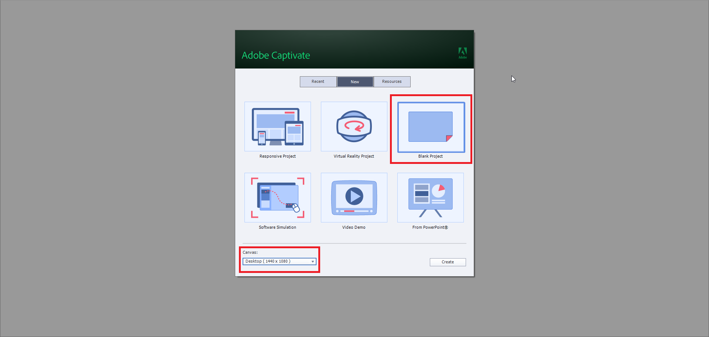
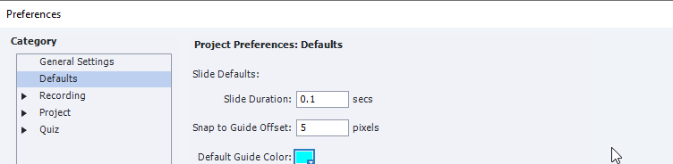
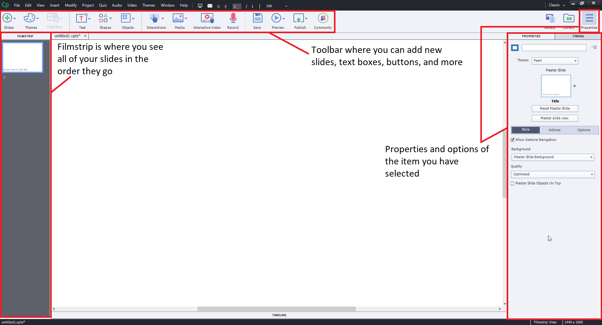
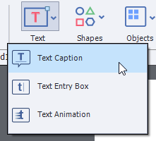
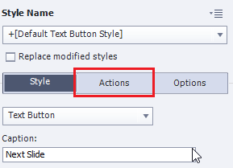
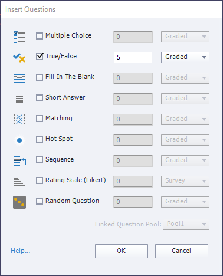
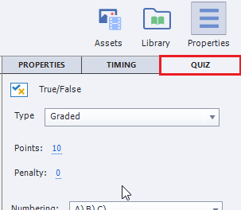

Adobe Captivate Information
This resource was created to help assist others like myself get through the basics quickly and efficiently.
Everything that is on here is here because it was a question that I needed answering at one time.
Table of Contents
Setting Up and Making a Simple Quiz
Depending on what you want to do, you can select from any of the templates that will suit your needs. For this tutorial, we will be making a short 5 question quiz.
P.S. Hovering over Red Text could be useful!
- Start up Captivate and you should be greeted with something that looks like this: 
- Select Blank Project and choose the size you want your project to be.
Normally, you'd want Responsive Project, but to make this tutorial shorter we're gonna stick with Blank. - First things first, open the project settings so we can change some things around.
- File > Publish Settings
- Once there, navigate to the Quiz Dropdown and expand it's options.
- Go to Quiz > Reporting to set up parameters for if you would like to do something with your quiz results.
- This is a bit complicated and is probably more of a question for Raph or Raj than me, but in short: if the client we are making this for has an LMS (Learning Management System) like Moodle already setup and configured, it would be relatively easy to get this going using the power of a programmer.
- If the client does not have one and you do not want to use Moodle, you will at the very least need a PHP web server to submit and analyze the data that Captivate collects.
- For more information on this topic, go here.
- Go to Quiz > Settings to change the general settings for how your quiz works.
- For example, you can change the name of your quiz, choose to shuffle the answers on your quiz, whether or not to provide "back" or "skip" buttons to the user, and more.
- Go to Quiz > Pass or Fail to setup the grading system.
- If you want your quiz to be a "Survey" instead, you can leave this section alone.
- Go to Default Labels to configure the messages the user receives when a certain action or requirement is fulfilled.
- For example, you can change what message is displayed to the user when they get a question incorrect.
- For now, we only need to change one setting and it's actually in the Defaults tab (Second one down from the top).
- Change slide duration from 3 to 0.1. 
- Exit out of the options window and look at the picture below for info on the 3 main panes you'll be using throughout your project. 
- If your project started off anything like mine, your window may be zoomed in too far on the current slide you're looking at.
- You should see this now, if you didn't before, in your main viewport.
- Lets customize this first slide and add some content for our user.
- First, Right click the text in the slide that says "Double click to add title" and select Delete.
- Next, go to the toolbar at the top and select the Text button, and then select Text Caption. 
- With the new text caption on your slide, left click it and we can get to customizing.
- If not already toggled on, click the "Properties" button at the top right of Captivate before continuing.
- With the text caption selected, you should see a bunch of things in the Properties panel on the right side of your screen.
- You can customize everything about the font, including size, color, font-family, spacing, and more. I customized mine as I saw fit, but feel free to do whatever you want with it.
- Above is what my text-caption properties look like. Once you're satisfied with it, head back to the slide window and resize it and place it where you would like it to rest.
- Next lets change the background color of our slide.
- In the main viewport, de-select your text-caption by clicking anywhere where there is whitespace on the slide.
- Once you have the actual slide selected, look at your properties view on the right and look for where it says Background.
- Select the dropdown and click Custom.
- Now you should see a few more options populate below. Customize them as you see fit and we'll move on to the next step.
- Here is what my slide looks like so far.
- Now finally, lets add a button so that our user can get to the next slide.
- As a note: Adobe Captivate is a little weird with how their slides work. They are all on a timer (default - 3 seconds) before they progress to the next slide.
- Adding anything to a slide that is interactable, like a button for example, will pause the slides until they are explicitly told to resume in some way.
- Go to the toolbar at the top of your screen again, and click Interactions and then Button.
- Feel free to rescale your button as you see fit.
- If you would like a little help with aligning the button, you can go to the very top of Captivate and select Modify > Align > Center Horizontally / Vertically On The Slide.
- With the button selected, navigate to your properties window again so we can edit how the button works, looks like, and says.
- To change the text of the button, in the properties window look for where it says "Caption".
- To change the color of the button, in the properties window select the dropdown that says Text Button and change it to a Transparent Button (for solid colors) or an Image Button if you have an image you'd like to use as the button.
- By default, our button is already set to make the slide continue to the next slide when we first created it.
- However, it is important to know how to change the buttons action for future reference.
- In the properties view, we have been working in the "Style" tab. There are two other tabs for the button -- "Actions" and "Options". We want the Actions tab. 
- Right below where you clicked "Actions" there is an option that says On Success. This is what executes as soon as the button is pressed. It should already be set with the correct option, but if it's not, select "Go to the next slide".
- Now we have our welcome screen setup! This is what mine looks like.
- Now for the next part -- the quiz.
- At the very top of Captivate select Quiz > Question Slide and a new window will pop up.
- This window is where you select what type of questions you want on your quiz, how many of each you want, and if you want those questions to be graded or to act as a survey instead.
- Personally I am going to choose 5 true or false questions, graded. 
- Click OK and 6 new slides will populate for you. 5 question slides, one results slide.
- These slides will contain everything you need to have a working survey that will link up to an LMS or other server. They are already configured to display results at the end of the questions, etc.
- These slides are also default colored, probably white background and everything. If you don't want to go through each one of them slide by slide and adjust all their colors, values, etc...then this is where something helpful called Themes comes into play. To learn more about themes, go here.
- Now that we have our quiz created, lets give it some questions and some answers.
- On the first question slide you have, go to the properties panel on the right and click Quiz to bring up the options for that current slide. 
- If you wish to change the defaults of what all the slides options will be (instead of on a per-slide basis), you can go back to the very first step where we went to the project settings and looked glanced over the quiz section.
- This area is where we define how this specific slide will work. Whether we want to provide a "skip" button, whether we want to display text when the user gets an answer correct/incorrect, how many tries does this person get, and more.
- Feel free to mess around with this on every single slide if you wish, or leave it as is for now.
- Now lets actually add in some questions and answers.
- If you chose True/False questions like me, this will be relatively easy. If you chose other type of questions, refer to this article on how to select what the correct answer is for your type of question.
- Once you've entered your question, and the possible answers, the easiest way to indicate what the correct answer is is by clicking the little radio button next to it. That's it!
- As you can see in the image below, I selected the little radio button next to the correct answer, "False", because my name is in fact not Tim.
- Do the same for the rest of the slides however you want, and then when you're ready, click the last slide.
- The last slide is the "Results" slide.
- If you go to the properties tab and select "Quiz" again (make sure you have something on this slide selected so you know you're in the right place) you can select what will appear on this slide, and what will not.
- Obviously, I made a graded quiz, so I'm going to leave everything checked except for "Quiz Attempts" -- since I'm not allowing retakes on my quiz.
- If you've followed along so far, you should have a fully functioning quiz (except for the Reporting of Results part).
- To test your slides/quiz, go to the top toolbar again and click on Preview.
- Here you can choose how you want to preview your quiz. There are two main ways I use to preview my slides.
- HTML5 In Browser will launch your quiz in a browser, as if it was uploaded to a website.
- From This Slide will launch your quiz on your computer. It will also only play the slide you are on and everything that comes after it.
- Once you launch your project, you'll notice there's this somewhat tacky looking bar at the bottom of your slides. This is called the Playbar. I personally dislike how this bar looks, feels, and works -- and disable it every chance I get. Instead I create buttons and ways to interact with the slides myself without relying on the playbar.
- If you'd like to disable the playbar completely:
- Navigate to Project > Skin Editor (or Shift+F11)
- Uncheck the first box that says "Show Playback Control"
- If you'd like to only disable the playbar during a quiz, but have it available at all other times:
- Go to File > Publish Settings again, then navigate to Quiz > Settings. At the very bottom there is a check box labeled: "Hide Playbar In Quiz"
- Alright! You tested your quiz, hopefully it all works well enough. Now all that's left is to publish it.
- At the top of the Captivate window, right next to "Preview" is "Publish".
- Publish the project to your computer, then navigate to the directory you chose, and there you go! Those are all the source files for your quiz, ready to be implemented into whatever project you might want to throw them in.
{kind=link}

{kind=link}
{kind=link}

{kind=link}


{kind=link}

{kind=link}
{kind=link}